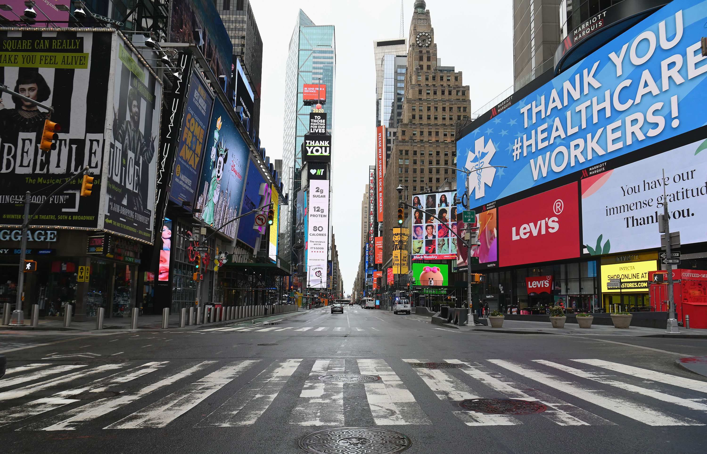
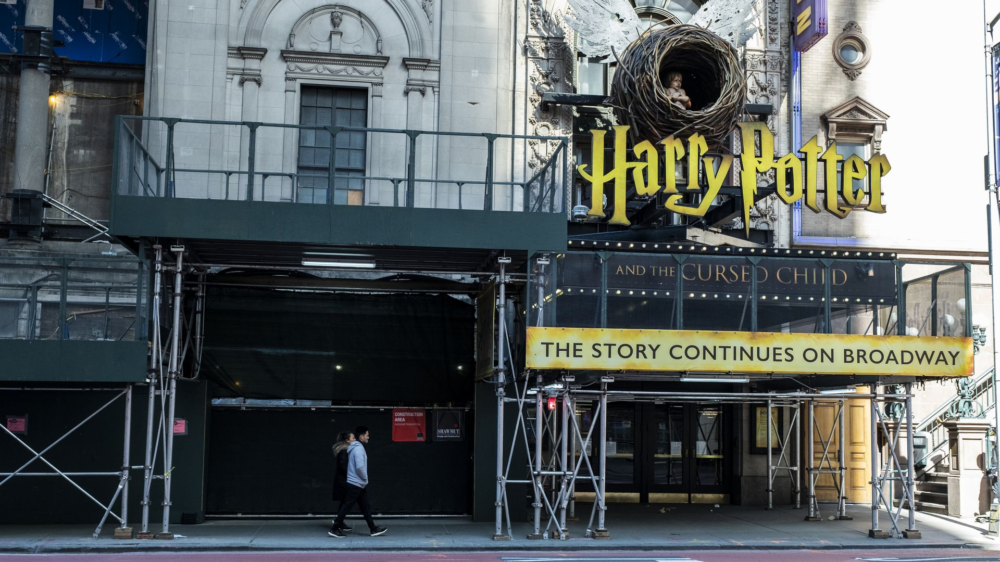
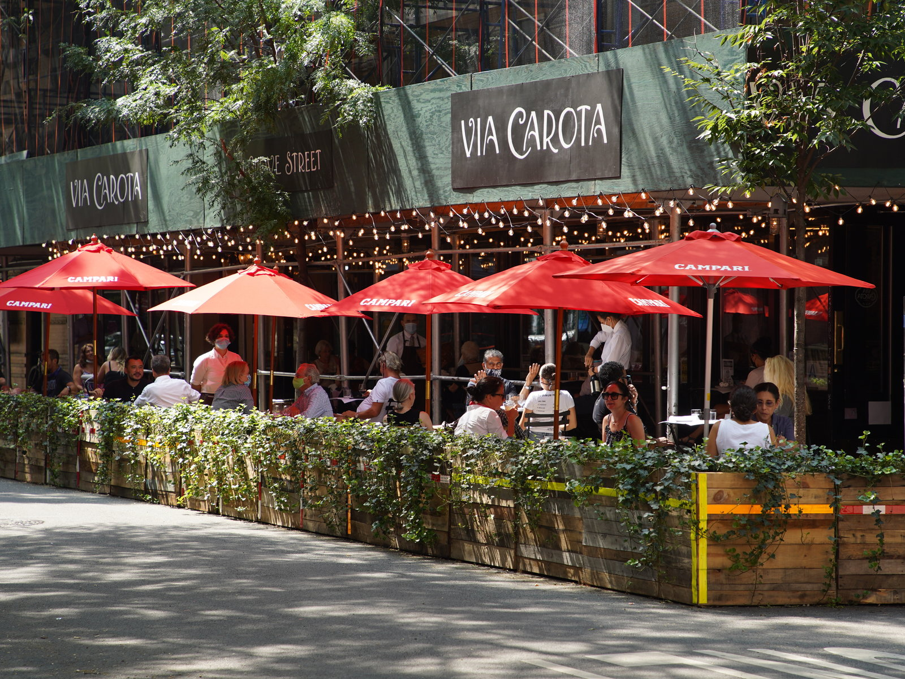

‘If No Tourists Come, I Have No Business’:
New York’s Tourism Crisis
International arrivals to New York are down as much as 93 percent, and the people and businesses of the city’s tourism industry are on the brink.

Taxis wait outside Terminal 4 at John F. Kennedy Airport (Source: Brigitte Stelzer for New York Post)
Outside Kennedy International Airport’s Terminal 4, the long line of New York City yellow cabs that in years past rotated like a conveyor belt to meet the demand of passenger arrivals has disappeared.
The wraparound rows where riders line up to hail a cab are empty. Where usually a dozen cabs idle to pick up travelers, last Thursday two were parked. The drivers can wait for hours before picking up a single passenger.
“I have no fares. There’s no flights coming in, no tourists visiting and there’s less people on the streets,” said Jean Metellus, a 71-year-old Queens resident who has owned his taxi since 1988. “So there’s no business, but we still have to pay the bills.”
The pandemic and the global travel restrictions introduced in March to slow the spread of the coronavirus have decimated the American tourism industry, taking with it the livelihoods of millions of people. The U.S. Travel Association, a trade group that promotes travel to and within the country, projects that the United States will see the number of international visitors plummet nearly 80 percent this year, to only 18.6 million, compared to 79 million arrivals last year.
While that slump has been devastating for popular tourist destinations like Orlando and Los Angeles, nowhere in the United States is the impact more visible than in New York City, which drew more than 13.5 million international visitors last year. New York City has been for years the most popular big-city destination in the United States.

Terminal 4 at John F. Kennedy Airport in New York City (Source: Lev Radin for Getty Images)
Now citizens from countries across the world — including Britain, China and Brazil, the three most important markets for tourists visiting New York — are banned from entering the country.
At the state’s five regional airports in July, international arrivals were down by 93 percent, according to Port Authority data, compared to July 2019. At Kennedy alone, the number of arriving international flights fell 70 percent in six months, to 2,121 in July, down from 7,034 in January. In August, fewer than 400,000 international passengers arrived at Kennedy, down a whopping 89 percent from more than 3.5 million during the same month the previous year.
The city’s food and beverage sector has lost nearly 200,000 jobs since March. The occupancy rate for hotels is down to about 40 percent, a decrease from the more than 80 percent in August 2019, according to the hospitality analytics firm STR. Demand for taxis and ride-app services in June was down by 71 percent, according to New York City’s Taxi and Limousine Commission, though lately those numbers have begun to rebound.
Jarring scenes from all around the city lay bare the devastating impact of the absence of tourism.
In Times Square, the vibrant street signs still shine, but more than half of the hotels in the area have closed and foot traffic has cratered. At Columbus Circle, pedicab bikers hunch over their handlebars, looking at their phones. Red tour buses continue to make daily rounds, but they drive empty past abandoned landmarks as their agents scavenge the sidewalks for local tourists.
"If no tourists come, I have
no business"
-Prince Mahamud
Souvenir shops across Manhattan that would receive up to as many as 30 customers an hour stand empty with no buyers for the marked-down suitcases, trinkets and “I ❤️ NY” T-shirts.
“If no tourists come, I have no business,” said Prince Mahamud, who runs a souvenir shop on Canal Street in Chinatown, on a recent weekday. “Souvenirs are for tourists,” he said as he lifted a tiny green plastic figurine of the Statue of Liberty. “No New Yorker is buying this.”
An Industry Reeling
In 2019, New York’s tourism industry marked its tenth consecutive year of growth, bringing in almost $7 billion in state and local taxes and supporting more than 403,000 jobs, according to NYC & Company, the city’s tourism marketing agency.
The stream of tourists and the dollars they brought in dried up in March. No landmark or neighborhood was spared.
“Travel and tourism have plummeted, the summer’s biggest events were canceled, Broadway is staying dark, and hotels and restaurants have seen their bookings crater,” said Scott M. Stringer, the New York City comptroller, who serves as the city’s official chief auditing officer.
“It’s been a rough few months,” a doorman at the residential section of the Plaza Hotel said last Tuesday, as he adjusted his blue mask and pointed toward the closed hotel guest entrance. “They’ve all gone.”
He was not only referring to hotel guests, but to fellow employees, who are still out of work as the hotel remains closed.
As of August, the comptroller’s office projected a loss of at least $1.5 billion in all taxable tourism sales for 2021. Nationally, the U.S. Travel Association forecasts a 75 percent drop in international travel spending by the end of year, to $39 billion from $155 billion in 2019.
“Tourism in the city, especially international tourism, will not return to pre-pandemic levels until there is a feeling that travel is safe, and many stores and restaurants cannot survive a prolonged loss of business,” Mr. Stringer said, adding that “massive federal support” is needed to tackle the tremendous scale of the issue.
Desolation in Times Square
The impact of the city’s loss is most visible in Times Square, where businesses disproportionately rely on tourists and office workers. The billboards continue to flash and pop, but many of the top attractions and rows of retail shops and restaurants are shuttered. Without the usual swarms of crowds, the bright lights of the neighborhood merely accentuate the emptiness of the space.
Officially, the Times Square area employs around 180,000 workers, provides 15 percent of the city’s economic output and generates $2.5 billion in tax revenue, according to 2016 data collected by The Times Square Alliance, a local trade group. Before the pandemic, around 380,000 pedestrians would pass through the area per day, a number that reached 450,000 on peak days. During the city’s lockdown, pedestrian counts in the square fell by over 90 percent, and now, despite an uptick, foot traffic is still down by 72 percent compared to the same period last year.
New York's Times Square is virtually empty (Source:Angela Weiss for AFP-Getty Images)
The Alliance has found that out of 46 hotels in the area, at least 26 — including the 478-room Hilton in Times Square — have shut their doors. Retailers have arguably done better staying afloat: 48 retailers closed out of 151, but 90 of the 162 restaurants in the area are shuttered. This includes some permanent closures alongside others that still plan to reopen.
On a recent Thursday, a tour bus operator stood on the corner of 48th Street and Seventh Avenue trying to sell bus tickets. Misbah Saley, 47, used to manage a team of tour agents, but his company laid off staff in response to the pandemic and he is back in the field, acting as an agent and dispatcher.
“It’s been very bad and very slow,” he said.
Before the pandemic, Mr. Saley said he would sell 2,000 to 3,000 bus tickets a week. Now he sells about 450, mainly to tourists from the tristate area. “This business has been completely reliant on tourism. Not only are we not seeing customers from other parts of the world, but we’re not seeing customers from farther than other parts of the state.”
A historic draw to the area was Broadway. Every year, the shows contribute more than $15 billion to the local economy and support 97,000 jobs, according to the Broadway League, a trade group. This year, after closing in March, the dark theaters have no plans to reopen until 2021 at the earliest.
Monique Scott, a 30-year-old freelance performer with a focus in musical theater, came to New York City with dreams of performing. With no gigs currently available, she is now working a part-time job at a fitness studio to make ends meet.
“A lot of performers, represented or not, are in limbo,” Ms. Scott said. “We’re all just sitting on our hands and not practicing our craft. We just had to dismiss all the things that we’ve worked so hard on and are in debt for.”
The Lyric Theatre where "Harry Potter and the Cursed Child" resides has remained dark since Broadway closed its doors in March. (Source: Ira L. Black/Corbis via Getty Images)
The evaporation of the stream of tourists to Times Square is evident beyond Broadway.
“Before all this, I couldn’t count the number of customers I’d have in a day,” said Ossama Elsayed, a 43-year-old hot dog and pretzel vendor who recently moved his cart from Times Square to a new spot on West 46th Street and Broadway. “Today, I’ve had only three customers,” he said.
“I’m making no money,” he continued. “I have three kids to take care of and my wife is not working. I need this work to pick up.”
Hotels and Restaurants Bear the Brunt
The leisure and hospitality industry is the single hardest-hit sector in terms of employment losses, according to state labor department data. Employment in the sector dropped by two-thirds between February and April.
Accommodation and food services lost 252,000 jobs, or 68.9 percent of the February level, but have since recovered by 36 percent or 89,800 jobs. Still, 174,000 people who worked in food and drink services in the five boroughs were out of work in August, according to data published by the Federal Reserve Bank of St. Louis.
“We’re down about 90 percent of all business, maybe even more"
-Sandy Ingber
In Grand Central Terminal, more than half of the restaurants, bakeries and breakfast spots are closed. The transportation hub, which buzzed no matter the hour of the day, is now so quiet one recent visitor could hear the rolling wheels of a faraway suitcase.
The Grand Central Oyster Bar largely depends on travelers and commuters. Restaurants in New York City were able to open indoor dining at 25 percent capacity last week, but without the heavy foot traffic of travelers in the terminal, the Oyster Bar, which reopened last week, has been sitting mostly empty.
“We’re down about 90 percent of all business, maybe even more,” said Sandy Ingber, the executive chef. “We put out an email blast to 25,000 people from our database. And still, we’ve got nobody here.”
About 80 percent of customers at the restaurant since reopening had been local return customers. Mr. Ingber sees about 80 to 100 guests a day and operates on a shorter schedule, he said, compared to 1,000 to 1,500 a day he would see this time of the year in 2019.
“We’re waiting to see if the cold drives people indoors,” Mr. Ingber said. “But as far as the Christmas season goes, I don’t think we’ll see much of a difference.”
Road to Recovery May be Local
NYC & Company, the city’s travel arm, was forced to lay off 42 percent of its staff, but the agency is now reimagining tourism in the city, with a recently launched initiative to attract local residents and domestic travelers.
“The biggest challenge is that the impact of the virus has become so prolonged and we want to remind New Yorkers that New York City is still the greatest city in the world and that we have the tools to rebuild it. And we will,” said Fred Dixon, NYC & Company’s president and chief executive.
The agency is offering up to $100 reimbursements for Mastercard purchases, including $10 back on every $20 spent on city experiences and $25 back on every $100 spent on hotels.
Making the most of the newfound calm on Mulberry Street in Little Italy, local New Yorkers, who until now had avoided the area because of the throngs of tourists, are increasingly visiting the neighborhood.
Last week, Julia Gold, a 23-year-old waitress at the Italian restaurant Gelso & Grand, was serving about four tables at the restaurant’s outdoor dining area.
“The biggest difference for us is that there are more local, young New Yorkers coming to eat here. It’s been nice,” she said. “Honestly, we’re still very busy, especially on weekends and nights. It’s hard to say, as this is all uncharted territory for everybody, what the future of dining out is supposed to look like. But I’ve found that locals are dying to come out and eat and be served.”
Outdoor dining during the pandemic at Via Carota restaurant in New York City's West Village (Source: Rob Kim for Getty Images)
Hotels that have reopened since lockdown are also reporting local interest, especially from those seeking luxury experiences.
“We are navigating our way through these new challenges one day at a time,” said Isabelle Hogan, the chief concierge at The Mark Hotel on Manhattan’s Upper East Side. “We have been pleasantly surprised to see that although NYC may lack ‘tourism,’ a luxury hotel experience is still desired by locals, who either want a change of scenery from their apartment or are between homes.”
Roger Dow, the president and chief executive of the U.S. Travel Association, says the resumption of international travel will be gradual and the most urgent need in the interim is federal support, which is being held up in Congress.
Since approving nearly $3 trillion in economic relief this spring, Congress and the White House have failed to reach agreement on another economic package. On Tuesday, President Trump called on Congress to pass relief for airlines and small businesses, after retreating from negotiations on a broader coronavirus relief package.
“The key thing for people to understand is that the travel business is really 83 percent small businesses,” Mr. Dow said. “Even though you’ve got the big names of the airlines, cruise companies and hotel companies, the majority are small business operators, restaurants, shops, tour guides, all people that really can’t afford to hang on very long.”
Road to Recovery May be Long
In Chinatown, tourists used to explore the bustling streets packed with fish markets, fruit stands, restaurants and local businesses. Gadget shops and souvenir stands line Canal Street, displaying high tech toys and figurines for sale.
“There’s normally so many people out here, and look, nobody is coming here,” said Mr. Mahamud, the shopkeeper on Canal Street. “This was a visitor area. It’s central and Chinatown is famous.”
The 34-year-old Brooklyn resident has cut the price of most of his products nearly in half to try to attract more business. Five dollar pens, he’s now selling for $3. Twenty- to fifteen-dollar toys, he’s now selling for $5. His business used to rake in about $2,000 a day, but now, he said, he only takes in about $200 to $240 a day.
“I’m hoping, by Christmas, it comes back,” he said. “But people are afraid. And if people have no money, they aren’t buying. People are struggling to pay rent and buy food. So they aren’t coming here.”